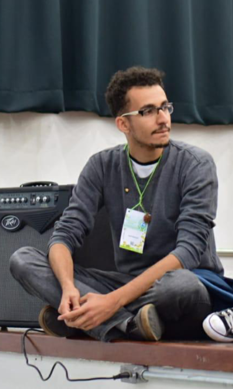

DESENVOLVIDO POR 
Motivos para realizar o curso de WebDev
Meu principal objetivo para fazer a aprender a mexer com programação tem haver com o fato de que não possuo uma boa base sobre este assunto, bem como pretendo fazer um link entre esta área do conhecimento e à área de meio ambiente Digo isso, pois eu atualmente estou cursando a Graduação de Bacharelado em Gestão Ambiental pela EACH-USP Além disso, espero que este curso venha a contribuir com minha formação pessoal, profissional e acadêmica.
Além disso, acredito que o aprendizado que terei neste curso contribuirá em muito com a realização de futuros projetos ao me formar em Gestão Ambiental
Assuntos Aleatórios: Organização de festas
Como foi solicitado para falar sobre alguma coisa optei por comentar sobre um tema que esteve envolvido diretamente com quase toda a minha Graduação foi na realização de eventos e festas, sendo que, neste momento, focarei apenas na Las Brisas.
Las Brisas
A Las Brisas é a única festa à fantasia da USP Leste que possui como tema principal a obrigatoriedade na utilização de fantasias.
A primeira edição da Las Brisas que participei foi a Las Brisas VIII e contou com a seguinte descrição:
Para comemorar os 10 ANOS DO CURSO DE GESTÃO AMBIENTAL, o Diretório Acadêmico de Gestão Ambiental orgulhosamente apresenta: LAS BRISAS VIII - A FESTA À FANTASIA DA EACH!!
Por fim, segue abaixo o teaser do vídeo da Las Brisas VIII, no qual apareço em alguns momentos deste vídeo como sendo o "anjo".
Caso tenha ficado curioso em saber um pouco mais desta incrível festa, segue abaixo alguns links:
Vendas Online da Las Brisas VIII pela BlacktagVídeo realizado dentro da festa
Vídeo oficial da Las Brisas VIII - EACH TV feat. Pânico na Band